Ki tsawwer b'yeddek Ɛla warq̈a, tsawwer fourmèt, couleurèt, w tzid el details ħatta lin tokhrejlek
taswira kemla.
Hedha howa bidou f'el Rendering(Computer-graphics),
Ama fi Ɛoudh ma testaƐmel stylo, bech testaƐmel code.
Donc, el rendering howa el creation mteƐ des images men des données 2D wala 3D b'el programmation.
El resultat eli yokhrej yetsamma "render".
El render howa Ɛibara Ɛla image/capture mtaƐ scene, w fel scene famma des objets, dhaw, w ghirou...
Generalement, nestaƐmlou programs eli ywafroulna el tools bech nkharjou renders. El tools ynajmou
ikounou:
- Rendering
Softwares:
MajƐoulin bech y'rendriew scenes w mostaƐmlin barcha fel aflèm, w el videoèt.
- Game Engines:
MajƐoulin bech yesnƐou video games ama Ɛand'hom zeda touls lel graphics (2D w 3D).
Bech n'randriew el scene, l'approche el Ɛadiyya heya:
1. N'placiew el fourmèt f'el scene mteƐna
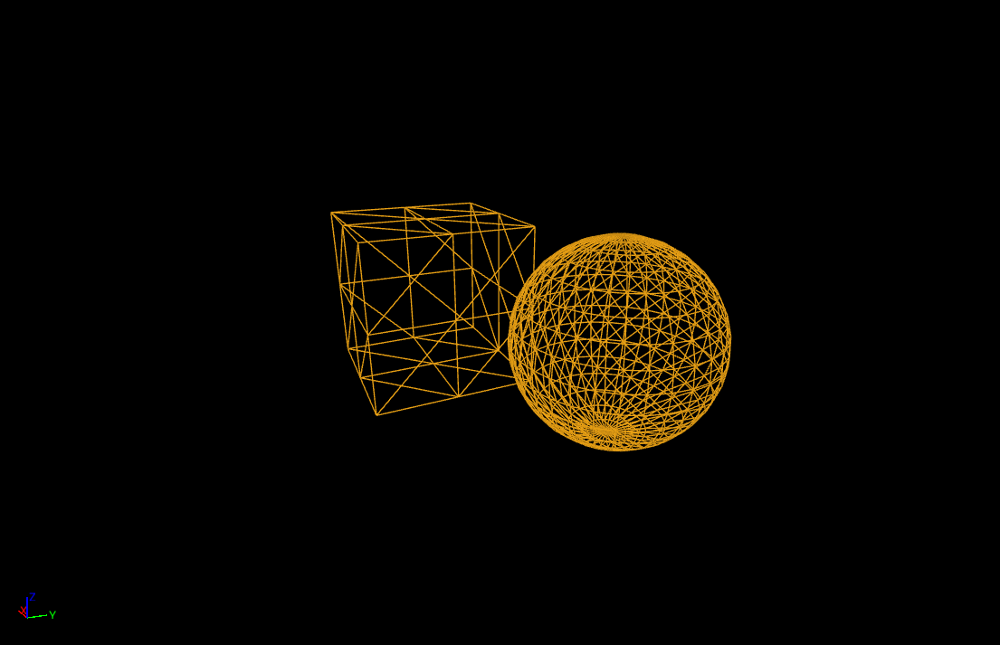
2. NaƐtiw el fourmèt alwèn (wela textures)
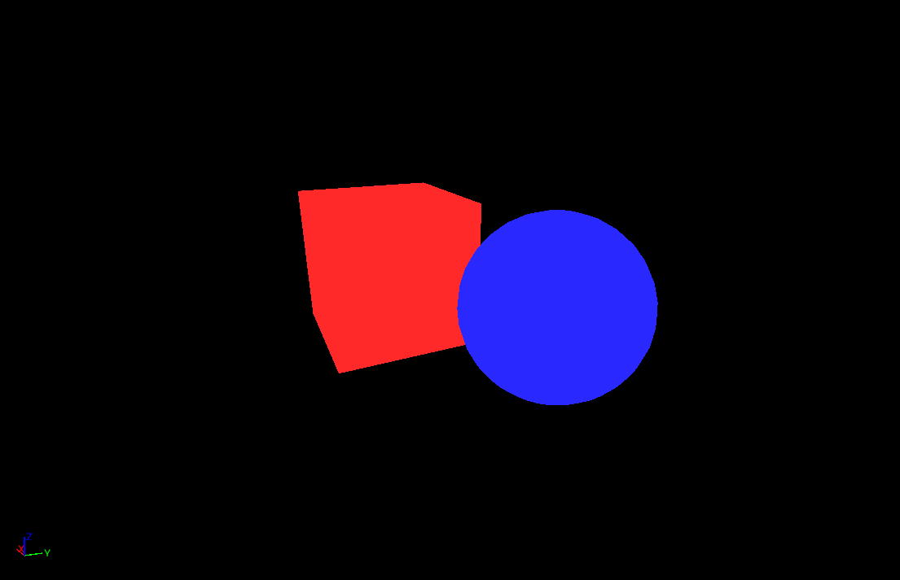
3. Nzidou el'dhaw(lights) lel scene
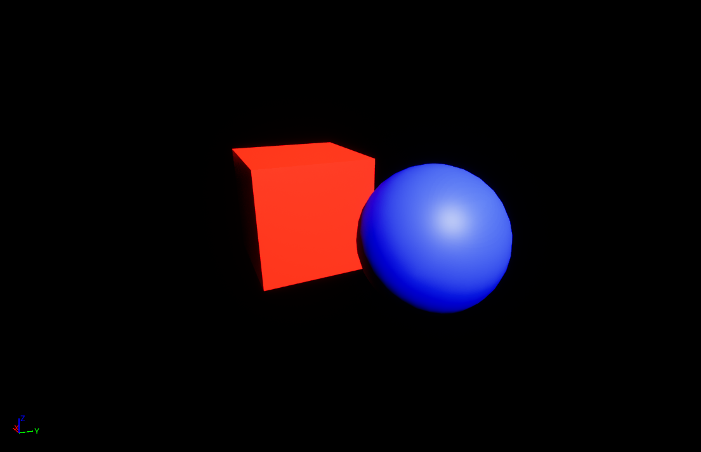
4. Nħasnou el resultat. Par example: nzidou e'dhol(shadows)
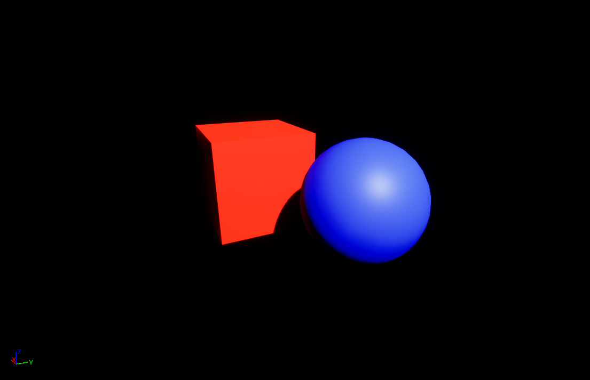
Bech nsawrou el fourmèt 3D, lezem ykoun Ɛandhom poinèt w khtout(edges) yelq̈iw binèt el poinèt(vertices).
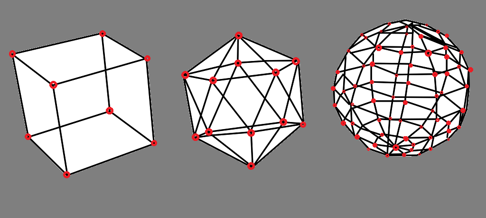
MbaƐd, naƐtiw lel fourma couleur (nestaƐmlou ħaja essemha Shaders).
El couleuràt ynajmou ikounou textures zeda.
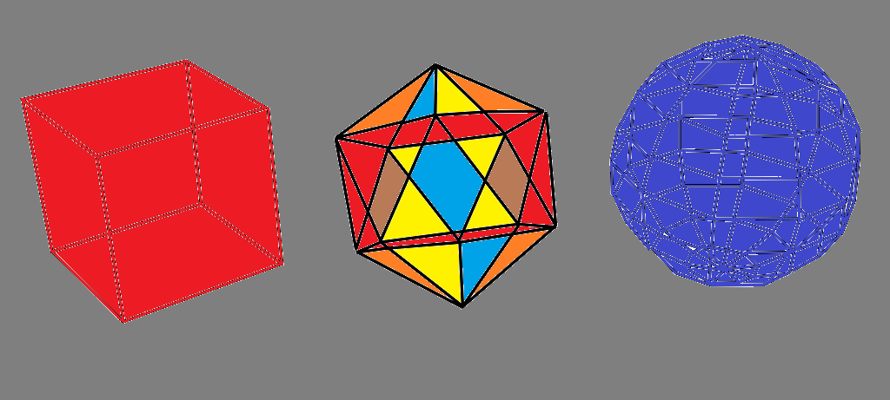
Bech ngeddou el texture, yelzem nestaƐmlou ħaja essemha
UV mapping.
El UV howa Ɛibara Ɛla ghlef yet'ħat Ɛla l'objet bech ennajmou naƐrfou kifech n'positionniew el texture
fouq̈ou.
Example 1: Cube
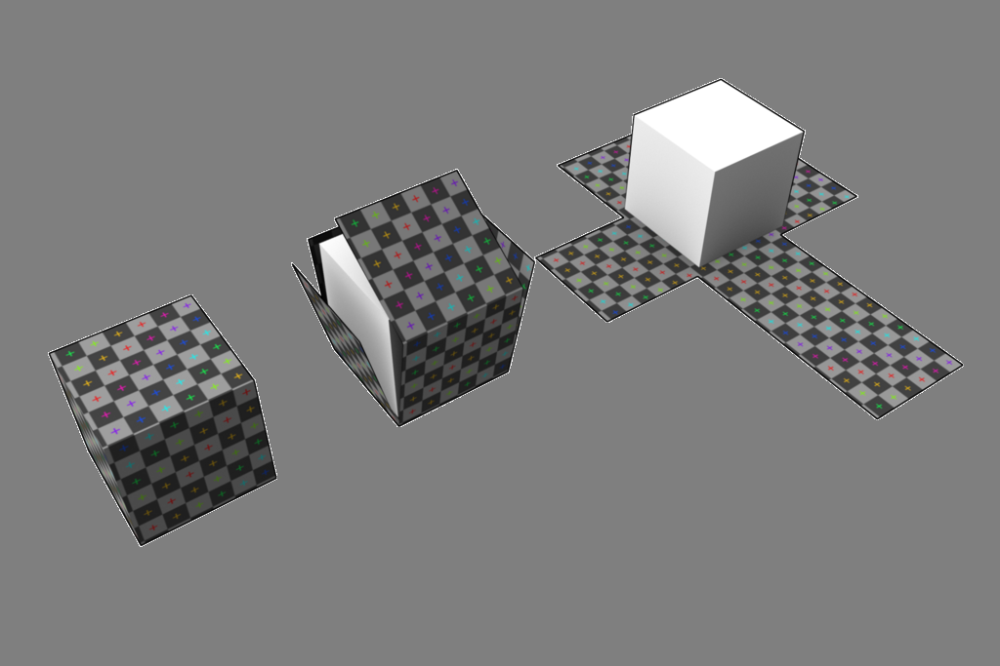
Example 2: Sphere
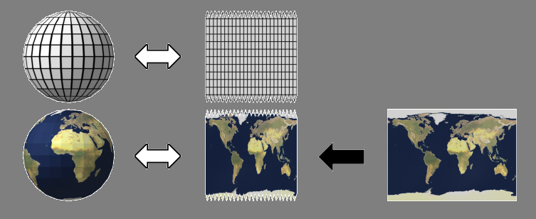
Mazel el'dhaw(lights).
Bennesba lel dhaw, yelzem naƐrfou ħaja essemah "Normals".
El normal heya el direction eli toghzer el barra mel objet.
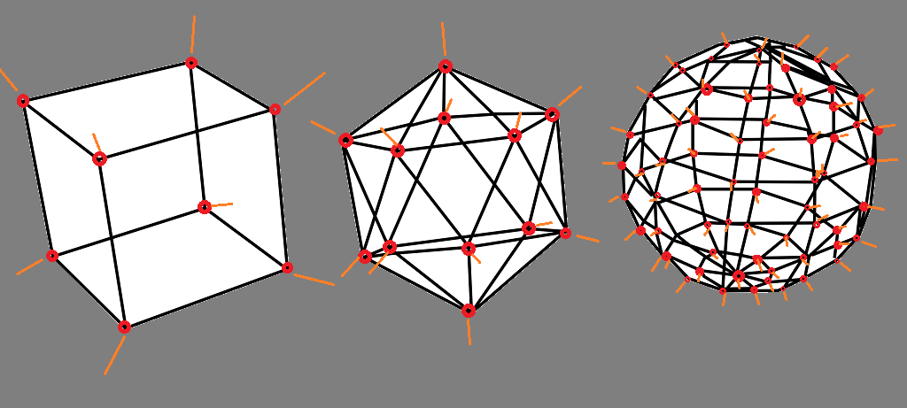
Vertices(poinèt), edges(khtout) w normals(directionèt Ɛala bara):
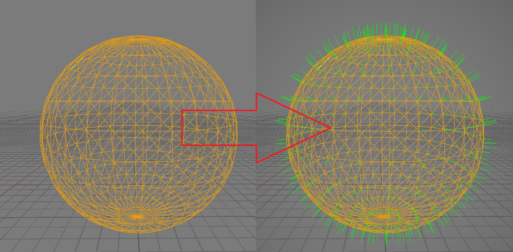
Finalement nq̈arnou el normals b direction el dhaw(light):
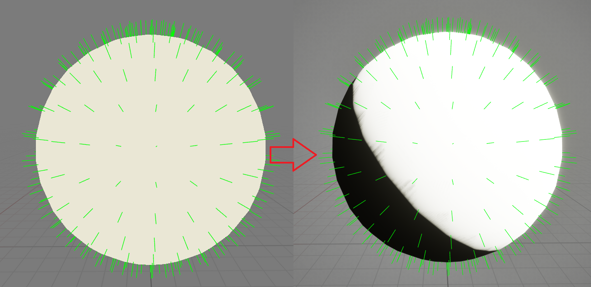
El mouq̈arna t'sir b'operation essemha dot product.
"Dot product" taƐtina valeur bin -1 w 1 ħasb l'angle binét el directionèt.
Nbadlou el couleur ħasb el resultat eli lq̈ineha.
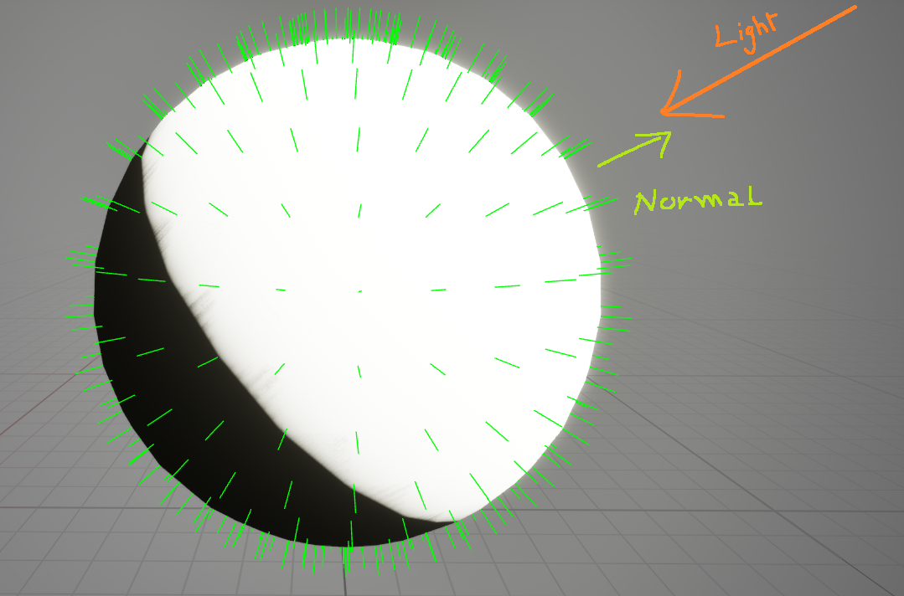
Binnesba lel dhol(shadows), juste nƐawdou nrendriew el scene mteƐna men jihet el dhaw(light) w nbadlou el couleuràt. To naħkiw Ɛliha nhar ekher.
Pagèt okhrin: shaders | sdf - basics | Home